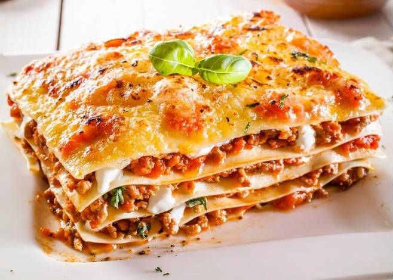

Lasagna

Lasagna is a type of pasta. It is usually served in overlapping sheets interspersed with layers of ingredients to taste, most often meat in bolognese sauce and béchamel sauce. Its origin is Italian and the dish usually prepared with meat is called baked lasagna.
Baked lasagna can also be made with vegetables (spinach, eggplant, etc.) or fish. It is finished with béchamel sauce and plenty of grated cheese for baking au gratin in the oven. The word "lasagna" comes from the Greek "lasanon", from the Latin "lasanum", which refers to the pot in which it was cooked.
Ingredients
- 1 pound ground beef
- ½ cup warm water
- 2 teaspoons garlic powder
- 1 tablespoon dried oregano
- 1 ½ teaspoons dried sage
- 1 tablespoon dried onion flakes
- 2 (14 ounce) jars marinara sauce
- 1 (16 ounce) package lasagna noodles
- 8 ounces ricotta cheese
- 1 pound mozzarella cheese, shredded
Steps
- Brown the ground beef and Italian sausage in a large skillet over medium-high heat. Drain excess grease. Stir in the water and black olives, and season with basil, garlic powder, oregano, sage, pepper, minced garlic, and onion flakes. Simmer for about 15 minutes, stirring frequently. Stir in the marinara sauce, and remove from the heat.
- Preheat the oven to 375 degrees F (190 degrees C).
- Place a layer of the meat and sauce in the bottom of a 9x13 inch baking dish. Cover with a layer of dry noodles. Spread a thin layer of ricotta cheese over the noodles, and sprinkle with a little mozzarella cheese. Cover with another layer of sauce, and repeat layering ending with the meat and sauce on top. Reserve about 1/2 cup of mozzarella cheese for later.
- Bake for 45 minutes in the preheated oven, but check after 30 minutes depending on how thick the lasagna is. Lasagna is cooked when you can easily stick a knife into it. Sprinkle the reserved cheese over the top, and return to the oven for about 10 minutes for a nice melted cheese topping.
Recipe taken from allrecipes.
Back to the Home Page